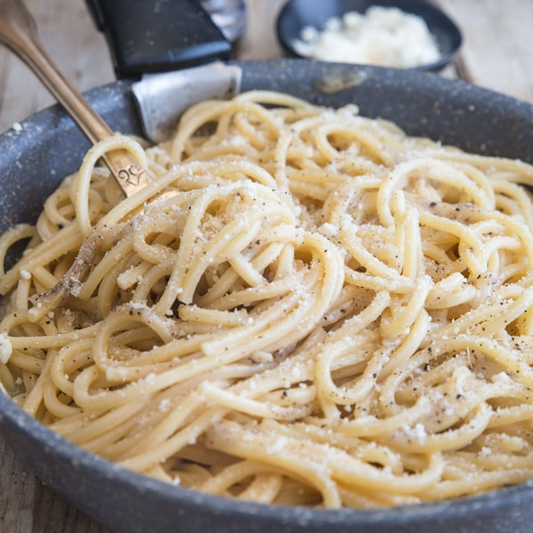

Spaghetti Cacio e Pepe

Description
This is a recipe that we have made in our family for many years--everyone loves it. It's a very basic and easy variation on mac 'n cheese.
The recipe only needs 5 mins to prepare and 18 minutes to cook and will yield 4 servings.
Ingredients
- 1 pound spaghetti
- 6 tablespoons olive oil
- 2 cloves garlic, minced
- 2 teaspoons ground black pepper
- 1.75 cups grated Pecorino Romano cheese
Steps
- Bring a large pot of lightly salted water to a boil. Cook spaghetti in the boiling water, stirring occasionally until tender yet firm to the bite, about 10 minutes. Scoop out some of the cooking water and reserve. Drain spaghetti.
- Heat oil in a large skillet over medium heat. Add garlic and pepper; cook and stir until fragrant, 1 to 2 minutes. Add spaghetti and Pecorino Romano cheese. Ladle in 1/2 cup of reserved cooking water; stir until cheese is melted, about 1 minute. Add more cooking water until sauce coats spaghetti, about 1 minute more.
Cook's Notes
Substitute butter for the olive oil if preferred. For a thicker or thinner sauce, adjust how much pasta water you add. If you add too much water, add some more cheese.
I have added other ingredients depending on my main dish to enhance flavors (like pancetta); I always experiment when creating food.